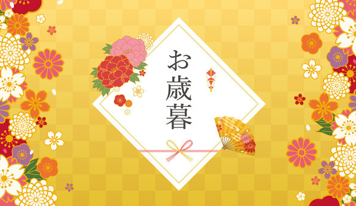

2026 WINTER GIFT
お歳暮
CUT 1
0.0 – 2.5s ｜ 引く
紅白金の水引が幕を右へ引き開ける
光と金粉が左からあふれる

一年の、ありがとうを。
CUT 2
2.5 – 5.0s ｜ 結ぶ
引いた水引がそのまま熨斗に巻きつき、
あわじ結びにキュッと締まる
熨斗はZ軸で奥から
ふわっと回転着地
お歳暮に、
プレモル。
CUT 3
5.0 – 7.5s ｜ 開く
熨斗が右へスライドアウト（CUT1と同じ方向）
背景が紺→紅にワイプ。
ギフト箱が左から追従して止まる
NEW YEAR 2027
迎春
干支デザイン缶
未年ラベル
CUT 4
7.5 – 10.0s ｜ 並ぶ
水引が床ラインに。缶は左→右へ0.15sずつ時差で着地
いつもより、
少しいいビールを。
A LITTLE BETTER
CUT 5
10.0 – 12.5s ｜ 注ぐ
缶の金粉が泡に変わって
グラスの中を上昇
泡がこんもり盛り上がる
（スローモーション）
THANK YOU, WITH PREMIUM MALT'S.
一年のありがとうを、
とっておきのプレミアムビールで。
2026 お歳暮 ｜ 酒のビッグボス 楽天市場店
CUT 6
12.5 – 15.0s ｜ 贈る
最後にもう一度、水引が左→右へ走り
右端でリボン結び → 静止 1.0s